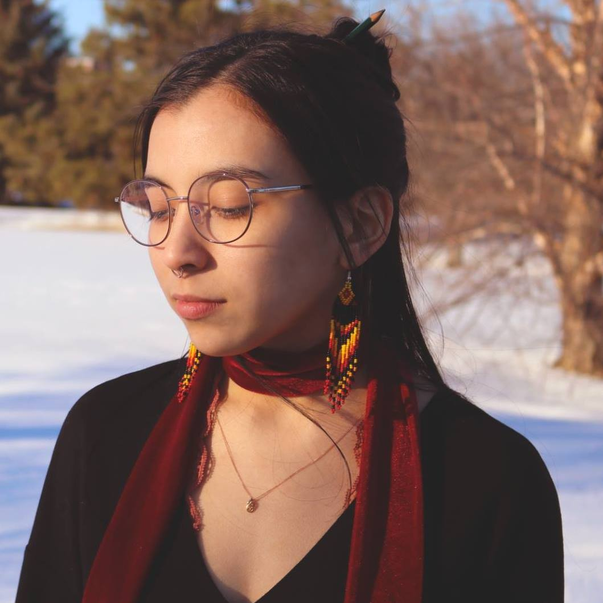

Hello, My name is Aanjeni Twenish and I am an Indigenous Photographer from Kitigan-Zibi. I specialize in all sorts of photoshoots with my favourite genres being scenic or urban photography, as they are both challenging and unique each time. I have been doing photography for many years and I utilize Canon cameras for the most part as I believe they have the best equipment for the job. If you have any inquiries about hiring me for a photoshoot or would like to purchase a print please let me know through the contact tab.
